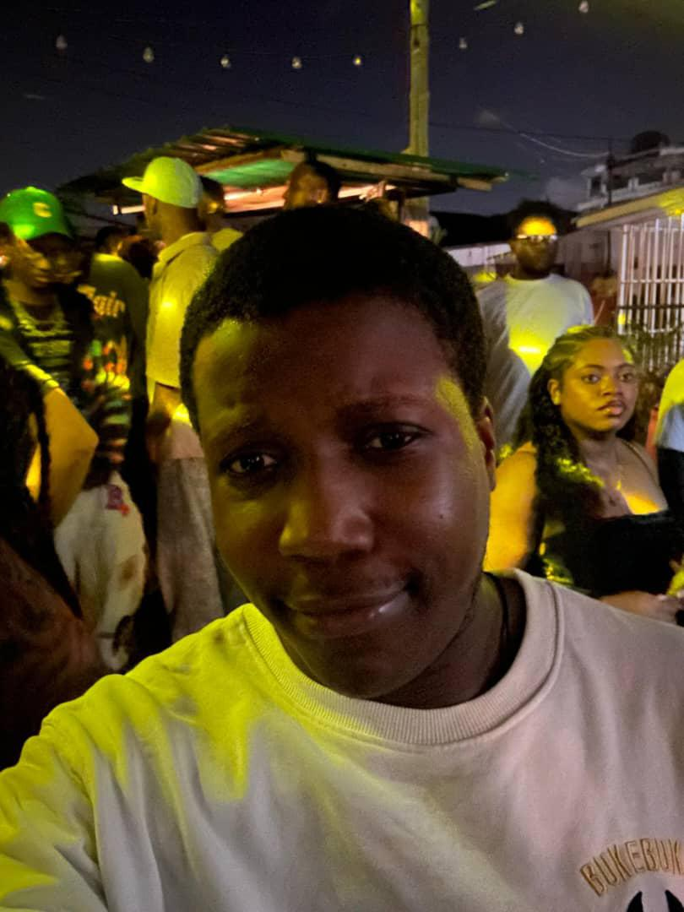
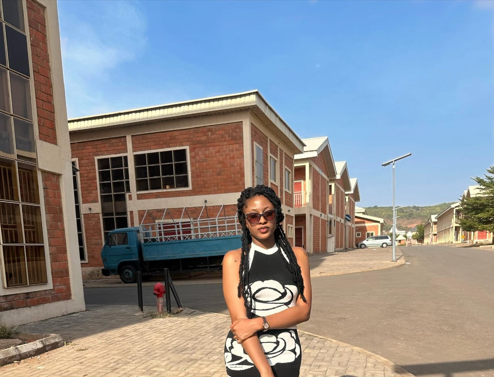
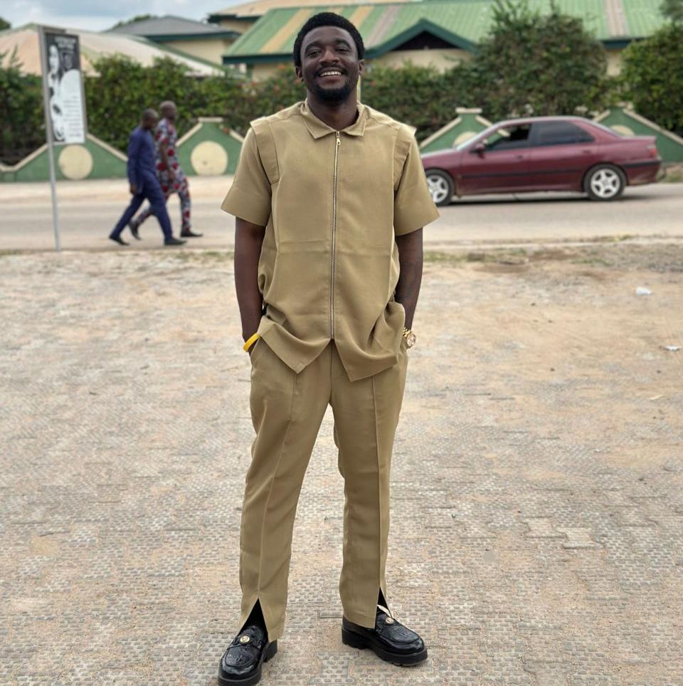

Welcome to HTMLpedia
HTMLpedia is a collaborative project created by students to explore the world of web development while sharing knowledge on different topics. Our website acts like a mini-encyclopedia, bringing together interesting facts and information about animals, technology, space, history, food, and sports.
Our Purpose
The goal of HTMLpedia is to practice building structured websites using HTML and to present useful, fun, and educational content. By working together, we combined our creativity and technical skills to design a space where learning meets collaboration.
The Team Behind HTMLpedia
HTMLpedia was built as a collaborative effort. Each team member contributed their own topic page, from animals to technology, to make the site diverse and engaging. This teamwork allowed us to learn not only coding, but also how to collaborate effectively on a shared project. The images above showcase our team members, each of whom played a vital role in shaping HTMLpedia. By combining our different strengths, creativity, and ideas, we were able to create a project that reflects true teamwork and shared learning.


Names of Collaborators
- Dozy
- Cynthia
- Zion
- Peculiar
- Justice
- Chiugo
- Victor
Explore More
Use the navigation links above to explore different topics. We hope you enjoy browsing through HTMLpedia as much as we enjoyed creating it!